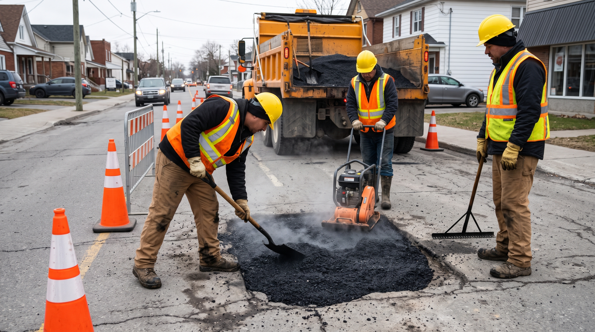
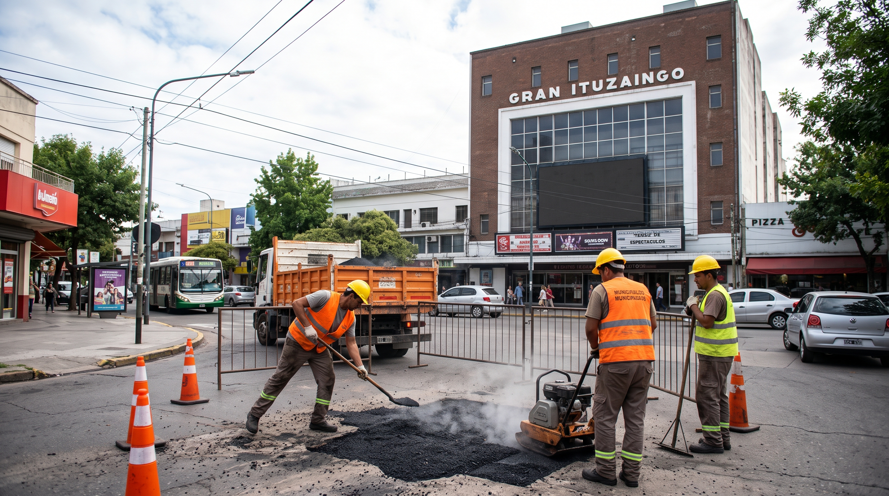
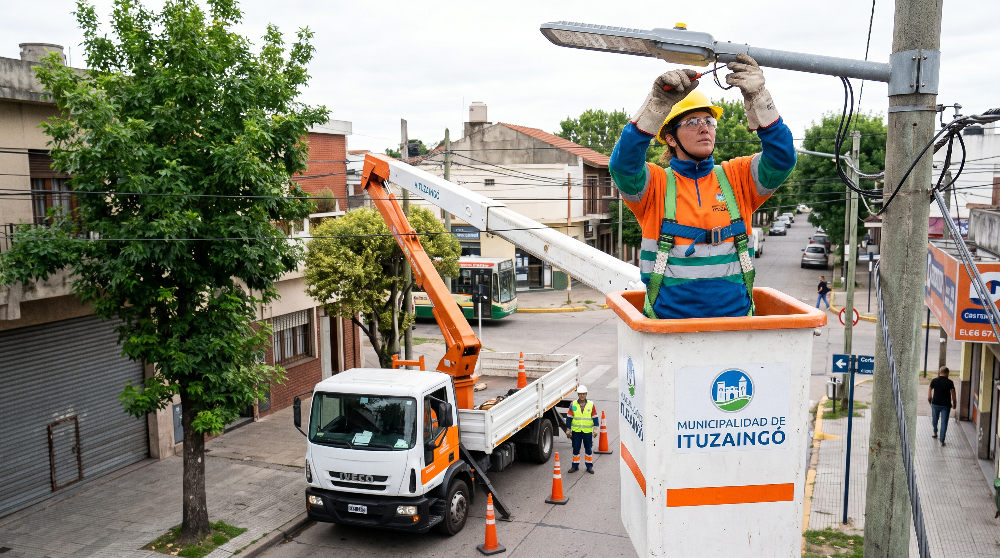
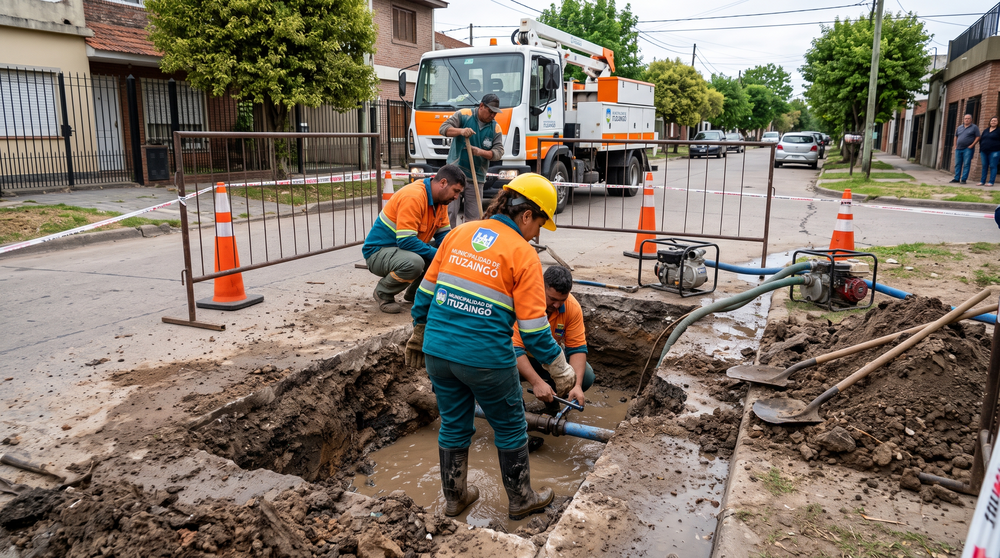
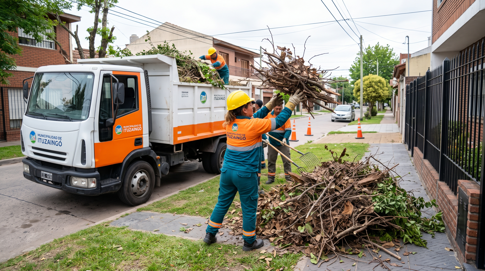
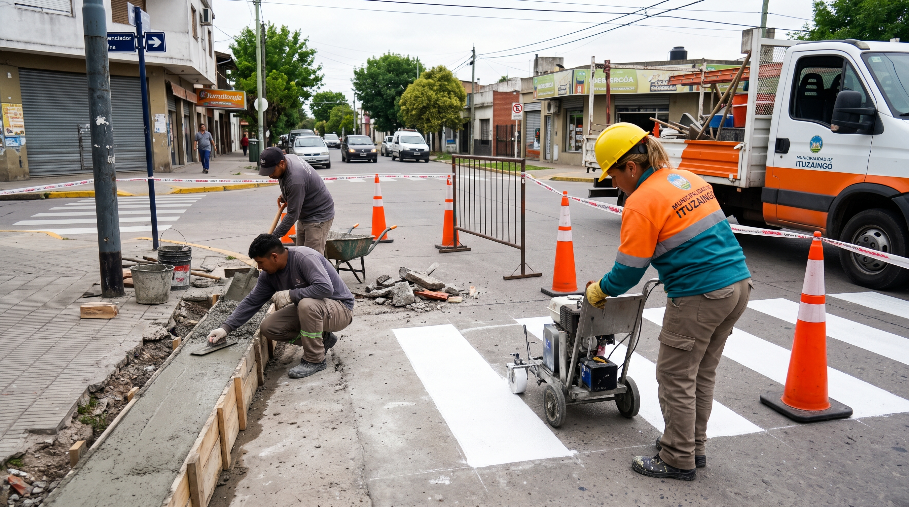

Tu barrio, más
cuidado
Reportá baches, luminarias, arbolados y tránsito de forma simple y ayudá a mejorar el espacio público.
¿Cómo funciona?
1
Contanos el problema
Completá un formulario con los detalles.
2
Lo gestionamos
Recibimos tu reporte y lo derivamos al área correspondiente.
3
Seguimiento
Podés ver el estado del reporte en el mapa.
Trabajos de mantenimiento en el municipio
Conoce las obras y tareas diarias de reporte urbano en Ituzaingó






Reportes recientes en el barrio
Consulta las incidencias informadas por los vecinos de Ituzaingó